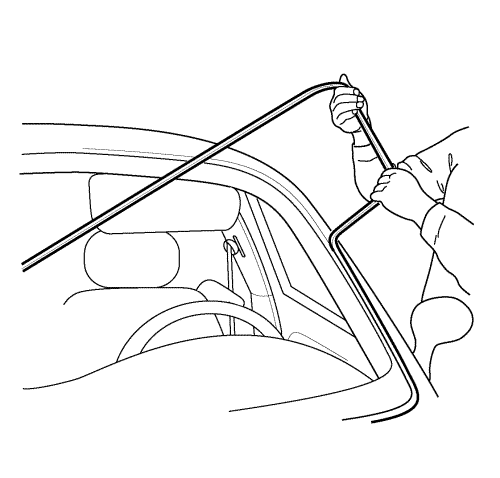
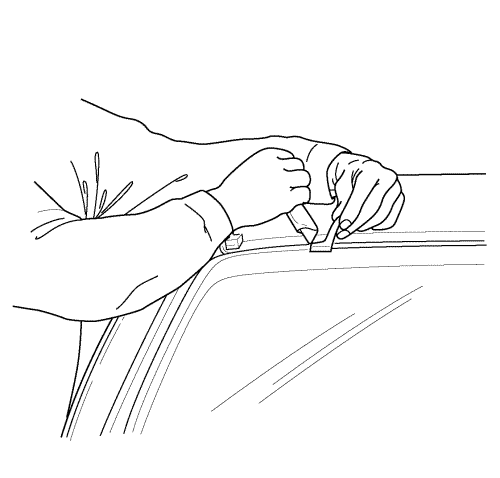
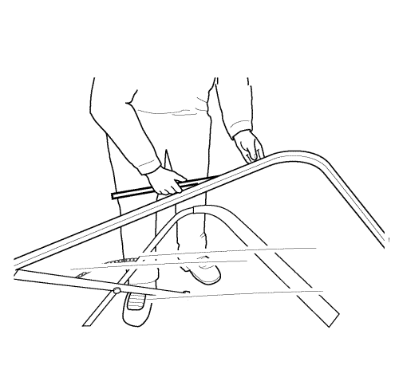
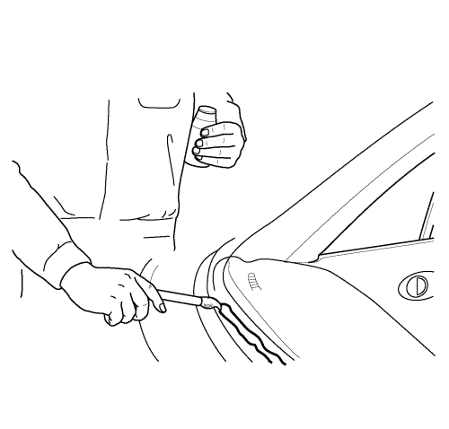
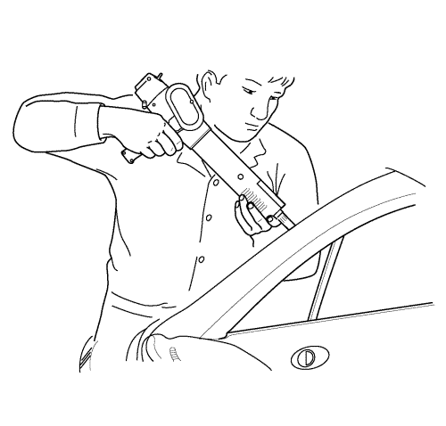
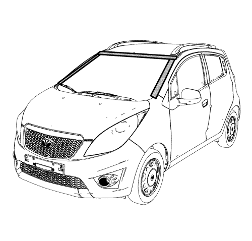
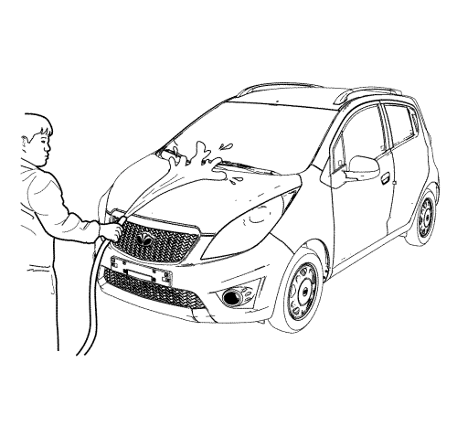

Sustitución del parabrisas
Herramientas especiales
J-24402 Dispositivo para quitar el sellante de los cristales
Procedimiento de desmontaje
Advertencia: Consulte Advertencia sobre salida de descongelación en la sección Prólogo.

- Desmonte la rejilla de entrada de aire. Consultar Sustitución del panel de la rejilla de entrada de aire .
- Retire el retrovisor interior. Consultar Sustitución del retrovisor interior .
- Desmonte el burlete alrededor del parabrisas.

- Utilizando el dispositivo (1) para quitar el sellante de los cristales J-24402, elimine el adhesivo alrededor del parabrisas.

- Desmonte el parabrisas del vehículo.
- Utilizando una cuchilla, elimine el adhesivo del parabrisas.
Procedimiento de montaje

- Monte el burlete nuevo en el parabrisas.

- Pegue con cinta adhesiva el burlete nuevo y el parabrisas para mantener en su sitio el burlete.
- Aplique imprimación adhesiva al marco y al perímetro del parabrisas.

Advertencia: Si no se permite que el adhesivo de uretano se endurezca lo suficiente podría ocurrir que ocupantes no sujetos fuesen expulsados del vehículo y se produjeran lesiones personales.| • | Para el curado por humedad de un adhesivo de uretano, es necesario un periodo mínimo de 6 horas a 21°C (70°F) o más, con al menos un 30 por ciento de humedad relativa. Se precisa un mínimo de 24 horas para que el adhesivo de uretano cure completamente. |
| • | Para el curado químico de un adhesivo de uretano se requiere al menos 1 hora. |
- Aplique adhesivo para cristal al marco del parabrisas.

- Monte el parabrisas en su marco.
- Vuelva a pegar cinta adhesiva sobre el burlete, el parabrisas y el marco del parabrisas para mantener el parabrisas en su sitio.
- Deje secar el adhesivo durante 24 horas.
- Retire la cinta.

- Compruebe la estanqueidad del parabrisas lanzando agua sobre el mismo. Si se encuentra alguna infiltración, seque el parabrisas y rellene la zona con adhesivo. Si persiste la infiltración, retire la luna del parabrisas y repita el procedimiento completo.
- Instalar el espejo retrovisor interior. Consultar Sustitución del retrovisor interior .
- Monte la rejilla de entrada de aire. Consultar Sustitución del panel de la rejilla de entrada de aire .
| © Copyright Chevrolet Europe. Reservados todos los derechos |